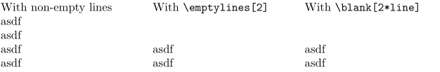

Contents
Summary
The command
\emptylines
inserts empty lines
Settings
Description
Insert empty lines.
You can also use \blank[n*line] for this.
Examples
Example 1
-
\startcolumns[n=3] With non-empty lines\crlf asdf\crlf asdf\crlf asdf\crlf asdf \column With \tex{emptylines[2]} \emptylines[2] asdf\crlf asdf \column With \tex{blank[2*line]} \blank[2*line] asdf\crlf asdf \stopcolumns
- 